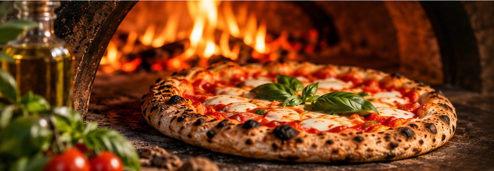

Un luogo da condividere
Il piacere di ritrovarsi a tavola
La Casareccia è un ristorante pizzeria a Corbara, in provincia di Salerno. Qui trovi pizza, proposte della cucina italiana e un ambiente informale, adatto a pranzi e cene in compagnia.
Questa pagina può diventare il racconto del locale: la sua storia, le persone che ci lavorano e le specialità da presentare con fotografie originali.
RistorantePizzeriaAsportoFamiglieAccessibilità
Scopri il menù
Cosa trovi da noi
Ambiente tranquilloAdatto anche a gruppi e famiglie
Ristorante e pizzeriaPranzo domenicale e servizio serale
Caffè e dessertPer concludere in dolcezza
Parcheggio gratuitoDisponibile anche in strada
AccessibilitàIngresso, bagno, tavoli e parcheggio accessibili
Animali ammessiSono ammessi i cani